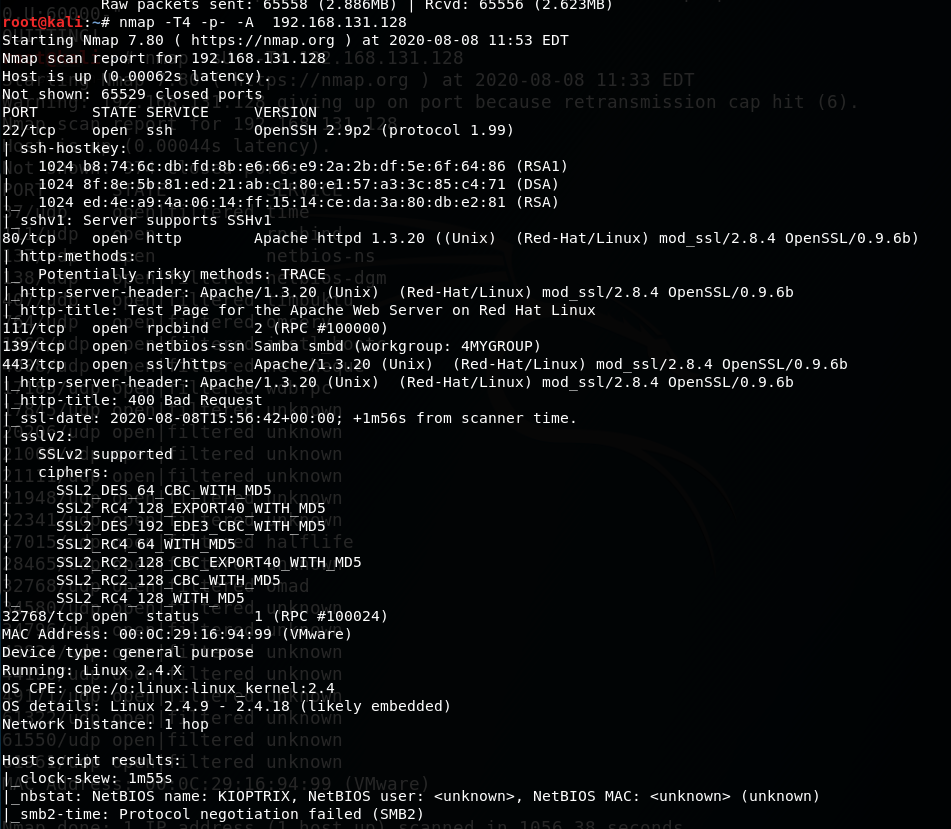

So we need to think about point of attack as an attacker.
When we see this scanning we light up with 80-443-139 ports because those are commonly found exploits.
For example in SMB just recently (2019) in 2017 there was a malware that called wannacry and that based off of something called Eternal Blue also known as MS 17.0.1.0. It was a pretty wicked exploit that utilized a flaw in SMB. SMB has been historically bad and web sites have been historically bad.
when we see somehting like port 22, 22 as ssh and historically it hasn't been historically bad.
Now we can try attacks against it like brute force attacks.
There is not usually remote code execution on SSH. It's not really common attack ssh.
TCM's first step is go out to the web site (in case http://192.131.168.128 and https://192.131.168.128)

That is what we will see. This is a default web page. when we talk about performing a network penetration test or even a web application penetration test.
If we see a default web page like this this is an automatic finding.
Now why is this the finding. Is it explainable? No not really but it tells us a little bit about the architecture and tells about the client's potential hygiene. we know that it is running apache and potentially the box is running red hat Linux
if a client is running a default web page. It brings up two questions. Are there other web directories behind this? Are they hosting a Web site somewhere else? that is just not at this IP adress on this base. Or maybe they aren't hosting any Web site and they just left for 4 3 and 80 open for no reason and put those default web page out there.
Now when you think about that that signals to an attacker to a poor hygiene.
so we need to note this findings as a good pentester. We notes might seem like this:

When we click documentation just randomly we see that:

This is called information disclosure. This is typical 404. This gives us a little bit information. We are getting apache 1.3.20 and we have got a hostname here kioptrix.level1 so we can get a naming convention. We could potentially know how they are utilizing naming conventions on their internal networks.

Vulnerability Scanning with Nikto
nikto is what is known as a web vulnerability scanner. If web site is running good security you might run into some issues with that and it might actually auto block it if it detects. But very commonly that's not the case
as you gain more practice and once you're getting in there and you're starting to notice vulnerabilities you're kind of understand whether or not they're running something like that.

-h for hosts
when we do pentest DoS is out of scope
We are also potentially interested in a overflow and rewrite and this one says this is vulnerable to a remote buffer overflow remote being important which may allow remote shell so remote.
trace is potentially vulnerable when you have something like cross site scripting(XSS) that could lead to something called The Cross site tracing but you kind of need both of those.
we need to save this scanning as a good pentester.